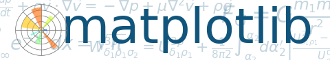

Version 2.2.0
Displays some matplotlib logos.
Thanks to Tony Yu <tsyu80@gmail.com> for the logo design
import numpy as np
import matplotlib as mpl
import matplotlib.pyplot as plt
import matplotlib.cm as cm
mpl.rcParams['xtick.labelsize'] = 10
mpl.rcParams['ytick.labelsize'] = 12
mpl.rcParams['axes.edgecolor'] = 'gray'
axalpha = 0.05
figcolor = 'white'
dpi = 80
fig = plt.figure(figsize=(6, 1.1), dpi=dpi)
fig.patch.set_edgecolor(figcolor)
fig.patch.set_facecolor(figcolor)
def add_math_background():
ax = fig.add_axes([0., 0., 1., 1.])
text = []
text.append(
(r"$W^{3\beta}_{\delta_1 \rho_1 \sigma_2} = "
r"U^{3\beta}_{\delta_1 \rho_1} + \frac{1}{8 \pi 2}"
r"\int^{\alpha_2}_{\alpha_2} d \alpha^\prime_2 "
r"\left[\frac{ U^{2\beta}_{\delta_1 \rho_1} - "
r"\alpha^\prime_2U^{1\beta}_{\rho_1 \sigma_2} "
r"}{U^{0\beta}_{\rho_1 \sigma_2}}\right]$", (0.7, 0.2), 20))
text.append((r"$\frac{d\rho}{d t} + \rho \vec{v}\cdot\nabla\vec{v} "
r"= -\nabla p + \mu\nabla^2 \vec{v} + \rho \vec{g}$",
(0.35, 0.9), 20))
text.append((r"$\int_{-\infty}^\infty e^{-x^2}dx=\sqrt{\pi}$",
(0.15, 0.3), 25))
text.append((r"$F_G = G\frac{m_1m_2}{r^2}$",
(0.85, 0.7), 30))
for eq, (x, y), size in text:
ax.text(x, y, eq, ha='center', va='center', color="#11557c",
alpha=0.25, transform=ax.transAxes, fontsize=size)
ax.set_axis_off()
return ax
def add_matplotlib_text(ax):
ax.text(0.95, 0.5, 'matplotlib', color='#11557c', fontsize=65,
ha='right', va='center', alpha=1.0, transform=ax.transAxes)
def add_polar_bar():
ax = fig.add_axes([0.025, 0.075, 0.2, 0.85], projection='polar')
ax.patch.set_alpha(axalpha)
ax.set_axisbelow(True)
N = 7
arc = 2. * np.pi
theta = np.arange(0.0, arc, arc/N)
radii = 10 * np.array([0.2, 0.6, 0.8, 0.7, 0.4, 0.5, 0.8])
width = np.pi / 4 * np.array([0.4, 0.4, 0.6, 0.8, 0.2, 0.5, 0.3])
bars = ax.bar(theta, radii, width=width, bottom=0.0)
for r, bar in zip(radii, bars):
bar.set_facecolor(cm.jet(r/10.))
bar.set_alpha(0.6)
ax.tick_params(labelbottom=False, labeltop=False,
labelleft=False, labelright=False)
ax.grid(lw=0.8, alpha=0.9, ls='-', color='0.5')
ax.set_yticks(np.arange(1, 9, 2))
ax.set_rmax(9)
if __name__ == '__main__':
main_axes = add_math_background()
add_polar_bar()
add_matplotlib_text(main_axes)
plt.show()